"Разрешительный режим"
Это схема работы кассовой программы таким образом, чтобы не допустить продажу маркированных товаров, которые не прошли проверку в ГИС МТ. Такой режим проверок кодов маркировки поэтапно вводится с 1 апреля 2024 года.
Подробнее о "разрешительном режиме" можно узнать на сайте системы "Честный знак" по ссылке.
Кассовая программа GBS.Market готова к работе в рамках "разрешительного режима". В этой статье рассмотрим процесс настройки и продаж в рамках указанного режима.
Info
Полноценная работа с "разрешительным режимом" доступна начиная с версии 6.5.6.2240 и новее.
Полезные материалы
Требования к кассовому оборудованию
Требования к онлайн-кассе
Info
По имеющейся у нас информации работа в рамках "разрешительного режима" обязательна в случае использования кассы с ФФД 1.2. Если касса еще не была обновлена – переход на "разрешительный режим" не обязателен.
Для того чтобы данные о выбытии кодов маркировки в процессе продажи передавались в систему "Честный знак", необходимо убедиться, что касса поддерживает формат фискальных документов версии 1.2.
В некоторых случаях может потребоваться:
- замена фискального накопителя
- обновление прошивки ККМ
- обновление драйвера для кассы
Когда касса будет готова к работе по ФФД 1.2, необходимо в кассовой программе GBS.Market указать используемую версию ФФД:
- отройте на главной форме в меню: Файл – Настройки
- перейдите на вкладку "Оборудование", далее "Печать чеков"
- укажите версию ФФД 1.2
Warning
Обратите внимание, что версия ФФД в настройках программы должна соответствовать версии ФФД онлайн-кассы. Простое переключение настроек программы не приведет к обновлению ФФД в кассе.
Передача фискального тега 1260 реализована для:
- кассы АТОЛ, работающие через драйвер v.10.*
- кассы АТОЛ, работающие через веб-сервер
- кассы АТОЛ, работающие через web-request
- кассы Штрих-М, работающие через драйвер версии 5.*
- кассы Меркурий
- кассы, подключенные через ККМ-Сервер
- кассы Нева
- кассы ВикиПринт, подключенные через VikiDirver
Полезные материалы
Warning
Обратите внимание, что передача тега 1260 для онлайн-касс ВикиПринт, подключенных через pirit.dll не работает и не будет реализована! Необходимо перейти на использование VikiDriver, который доступен в GBS.Market 6.6.
Требования к сканеру штрихкодов
Для работы в рамках разрешительного режима необходимо убедиться, что используемый сканер штрихкодов настроен и работает корректно.
Важно учесть, что код маркировки для проверки должен передаваться с учетом символов "разделители групп разрядов" (<GS>), либо заменять их на пробелы. В противном случае ГИС МТ может сообщать, что код маркировки не найден в системе.
Рекомендуется использовать сканер в режиме "эмуляция COM-порта" для корректного считывания кода маркировки.
Проверить готовность и корректную работу 2D-сканера можно по инструкции.
Настройка кассовой программы для разрешительного режима
Для настройки работы в рамках разрешительного режима в кассовой программе GBS.Market откройте с главной формы в меню Файл – Настройки, а затем перейдите в Законодательство – Честный знак (маркировка)
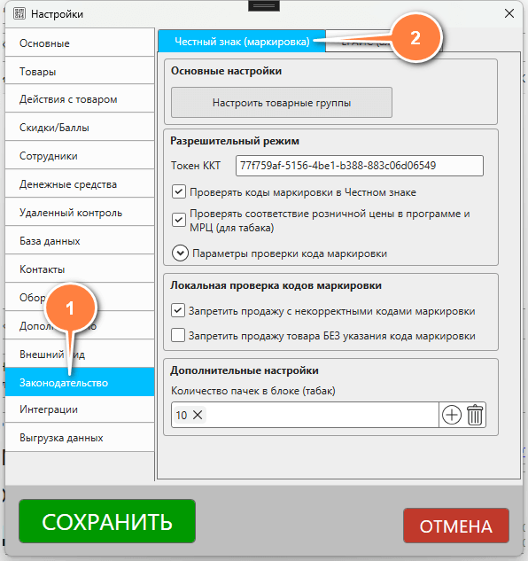Настройка товарных групп
Начиная с версии 6.5.15 в GBS.Market доступно включение разрешительного режима отдельно для каждой товарной группы. В окне настроек нажмите кнопку "Настроить товарные группы".
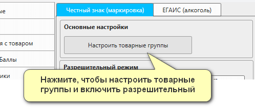Откроется окно с перечнем товарных групп, которые подлежат обязательной маркировке. Убедитесь, что напротив тех групп, из которых вы продаете товары, включена опция "Участник оборота", а затем включите "Разрешительный режим" для необходимых товарных групп.
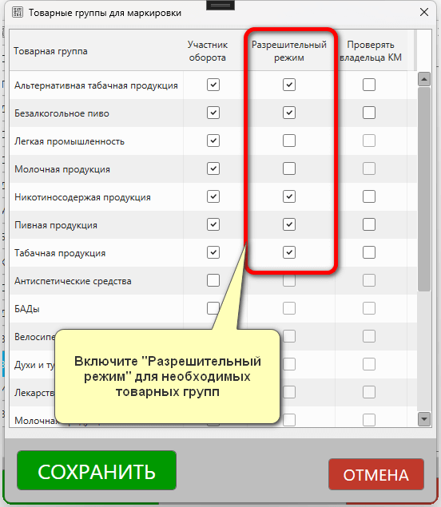При необходимости вы можете включить проверку владельца кода маркировки. В случае включения такой опции программа будет ограничивать продажу, если владелец кода маркировки не совпадает с владельцем токена ККТ.
Настройка онлайн-проверка кодов маркировки в ГИС МТ
После выбора товарных групп необходимо настроить онлайн-проверку кодов маркировки в ГИС МТ (Честный знак) для работы по "Разрешительному режиму".
Для возможности проверки кодов маркировки в системе "Честный знак", необходимо в личном кабинете ГИС МТ выполнить генерацию токена для ККТ, который далее потребуется указать в кассовой программе GBS.Market. О том, как получить токен для ККТ, можно узнать в инструкции.
После получения токена его необходимо указать в настройках в поле "Токен ККТ".
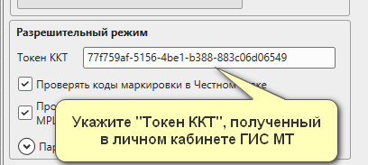Включите опцию "Проверять коды маркировки в Честном знаке"
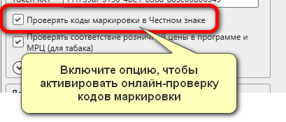Дополнительные настройки проверки
Для более тонкой настройки в разделе "Параметры проверки кода маркировки" можно указать необходимые значения.
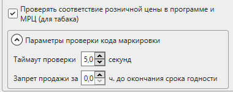- таймаут проверки – время, сколько программа будет ждать ответ от системы "Честный знак". Минимум – 1,5 секунды. Если интернет медленный – необходимо увеличить значение
- запрет продажи за Х часов до окончания срока годности – вы можете запретить продажу раньше, чем фактически истекает срок годности товара
- проверять соответствие розничной цены и МРЦ (для табака) – включает ограничение для продажи табачной продукции по некорректной цене
Критерии соответствия GBS.Market требованиям "Разрешительного режима"
Проверка кодов маркировки через ГИС МТ
В кассовой программе GBS.Market реализовано соответствие критериям проверки кодов маркировки согласно методическим рекомендациям системы "Честны знак". Учитываются следующие случаи запрета:
- Сведения о КМ отсутствуют в ГИС МТ
- Структура КМ не соответствует формату
- КМ выведен из оборота
- Продажа товара заблокирована по решению органов власти
- КМ не введен в оборот
- Срок годности товара истек
- Цена товара не соответствует МРЦ (для табака)
Кроме этого могут выполняться следующие проверки:
- отсутствие КМ у товара, подлежащего маркировке
- КМ на момент проверке числится на балансе у другой организации, отличной от владельца токена
- дублирование КМ в рамках одного чека (кроме товаров с частичным выбытием)
Передача фискального признака по факту проверки КМ
Требования "Разрешительного режима" подразумевают передачу информации о факте проверки кода маркировки в фискальный чек в составе тега 1260 (отраслевой реквизит предмета расчета).
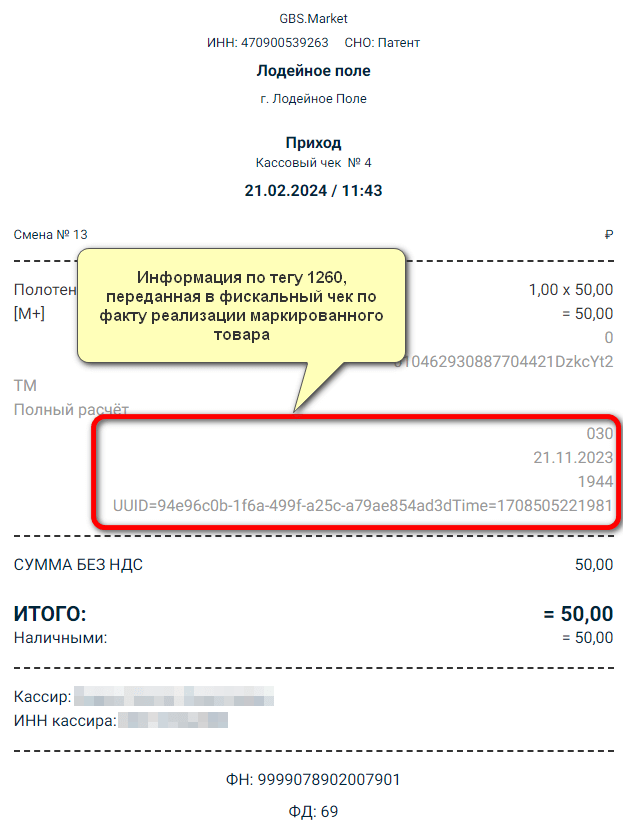Хранение логов обмена данными с ГИС МТ
Для возможности проверки отсутствия фактов проверки кодов маркировки по "Разрешительному режиму" необходимо хранение логов (журналов работы) по обмену данными с ГИС МТ.
GBS.Market фиксирует информацию об обмене с ГИС МТ в отдельные файлы логов в папке CRPT_logs и хранит их в течение 3 месяцев.
Как работает "разрешительный режим" при продаже маркированных товаров
Проверка статуса кода маркировки
После того как будут указаны настройки, соответствующие работе по "разрешительному режиму", кассовая программа GBS.Market в момент добавления товаров в чек будет производить проверку введенного кода маркировки через систему "Честный знак". В случае, если по указанному коду есть ограничения – будет показано соответствующее уведомление.
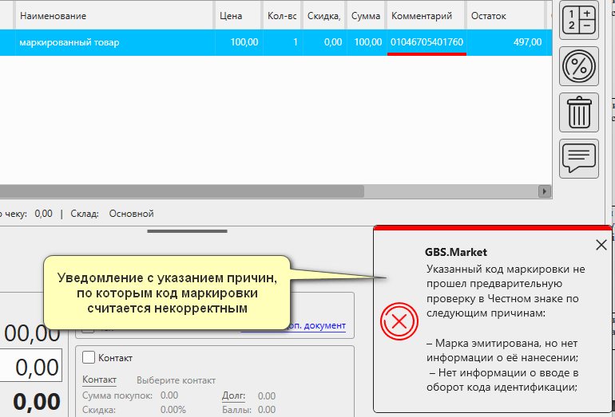В списке товаров в корзине (чеке) столбец, содержащий код маркировки (комментарий) будет отмечен красным цветом.
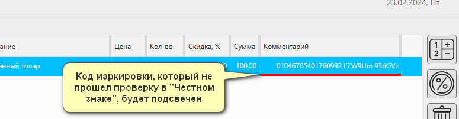При наведении на код маркировки будет отображена всплывающая подсказка с перечнем ошибок проверки кода маркировки.
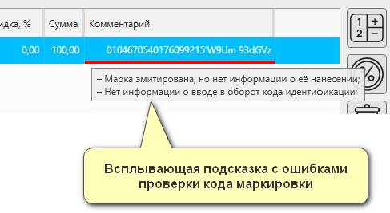Кроме этого, на ячейку с кодом маркировки можно кликнуть – программа отобразит перечень ошибок по КМ. Это удобно, например, при использовании сенсорных экранов, когда мышь не используется в работе.
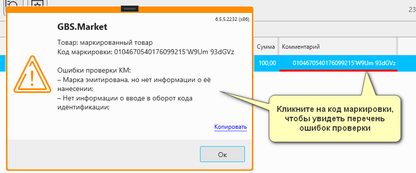В случае, если продажа товаров с некорректными кодами маркировки запрещена, то при попытке завершить продажу, содержащую товары с кодами маркировки, не прошедшими проверку, программа заблокирует возможность сохранения продажи.
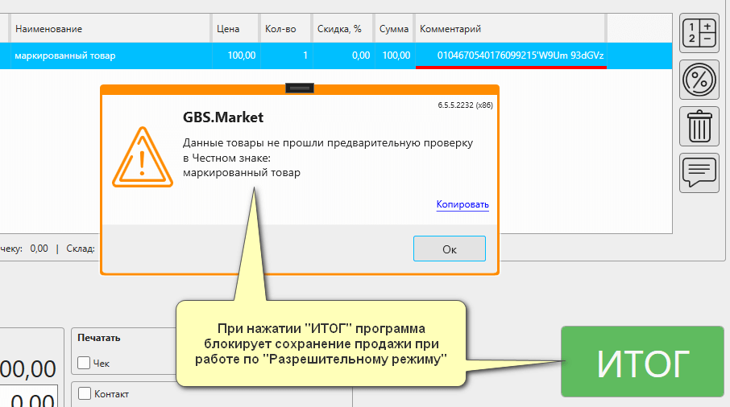Для того чтобы продолжить продажу, необходимо проверить товары в корзине (чеке) и при необходимости внести изменения.
Проверка МРЦ для табачной продукции
Если в настройках программы включена опция "Проверять соответствие розничной цены в программе и МРЦ", то в процессе продажи кассовая программа GBS.Market проверит минимальную розничную цену табачной продукции, зашифрованную в коде маркировки, на соответствие цене, указанной в программе.
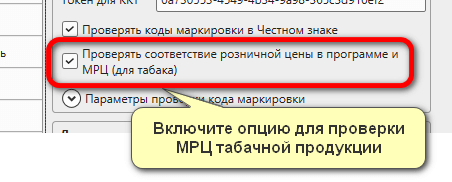В момент сканирования кода маркировки программа сверит цену, установленную на табачную продукцию, с МРЦ из кода маркировки. Если будет обнаружено расхождение, кассовая программа скорректирует цену в чеке и покажет уведомление.
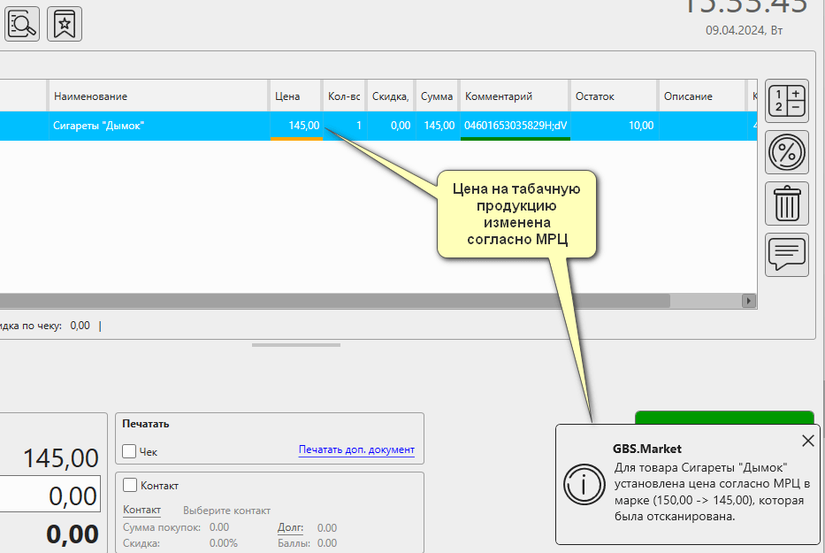Ячейка с ценой в списке товаров будет выделена оранжевым цветом. А при наведении на ячейки будет показана всплывающая подсказка с причиной изменения цены.
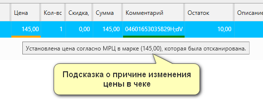При клике на ячейку будет показано сообщение с указанием товара и причиной изменения его цены.
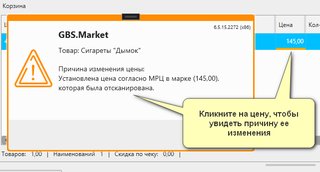При попытке завершить продажу для чека, в котором есть табачная продукция с ценой, отличающейся от МРЦ, программа не позволит это сделать и покажет уведомление. Такая ситуация может возникнуть когда, например, установлена скидка на позицию.
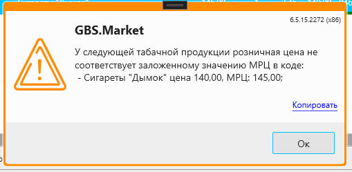Работа с локальным модулем в "оффлайн-режиме"
В марте 2025 года вступают в силу требования по обязательному использованию локального модуля "Честный знак", которые позволяет производить оффлайн-проверку кодов маркировки.
Информация
Поддержка интеграции с локальным модулем в кассовой программе доступна начиная с версии 6.7.0.2700 и новее.
Использование локального модуля происходит в случае, если нет доступа к онлайн-проверке.
Процесс продажи в оффлайн-режиме аналогичен онлайн-режиму, с одним лишь отличием - программа будет проверять код маркировки в локальном модуле. В случае, если в оффлайн-базе есть информация о запрете продажи конкретного - кассовая программа GBS.Market не позволит завершить продажу.
Полезные материалы
Вопросы и ответы
Как проверить статус кода маркировки
Статус кода маркировки можно проверить в т.ч. через официальные мобильные приложения "Честного знака":
- Приложение для потребителей
- Приложение для бизнеса
Что делать, если программа сообщает "Код маркировки не найден в ГИС МТ"
При работе в рамках разрешительного режима кассовая программа GBS.Market отправляет запрос на проверку кода маркировки в систему честный знак. В ряде случае от ГИС МТ может прийти ответ Код маркировки не найден в ГИС МТ. Это может означать следующее:
- сканер штрихкода некорректно сканирует код маркировки
- код маркировки напечатан некорректно
- код маркировки поддельный
В такой ситуации попробуйте следующее.
Удалите товар из чека и добавьте снова
Возможно, что при сканировании кода маркировки случится технической сбой или виной человеческий фактор, например, случайно дважды отсканировали код маркировки. Удаление и добавление товара должно помочь в такой ситуации.
Проверьте работу сканера штрихкодов
Если ситуация повторяется систематически, возможно, что сканер настроен некорректно и распознает коды маркировки неправильно. Обратитесь в техническую поддержку производителя сканера. Например, некоторые модели сканеров требуют обновление прошивки для корректной работы с кодами DataMatrix
Переключите сканер в режим эмуляции com-порта
Работа в таком режиме позволяет напрямую получать данные из сканера. В режиме "эмуляции клавиатуры" возможные ошибки, когда сканирование происходит при некорректно выбранной раскладке клавиатуры. Кроме этого, сканеры в режиме "эмуляции клавиатуры могут игнорировать непечатные символы, такие как разделители групп разрядов <GS>.
Проверьте код маркировки с помощью приложения
Если перечисленные рекомендации не помогают - проверьте, что приложение "Честный знак. Бизнес" находит сканируемый код маркировки.
Обратитесь в службу поддержки.
Если уверены, что:
- код маркировки есть в системе ГИС МТ
- сканер работает корректно
тогда пришлите в нашу службу поддержки следующую информацию:
- фото кода маркировки
- скриншот из приложения с результатом проверки
- логи работы программы за день, когда возникла ошибка